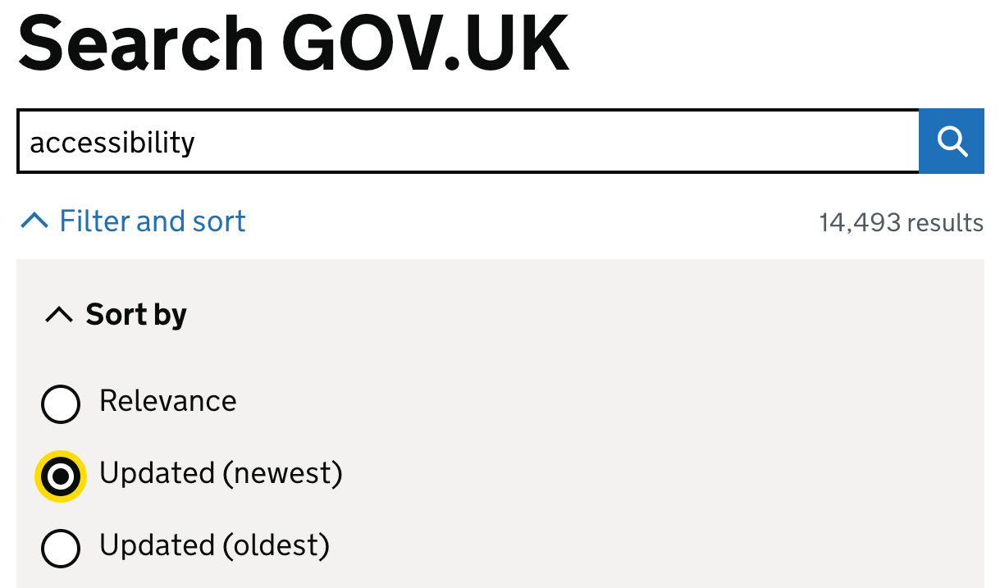
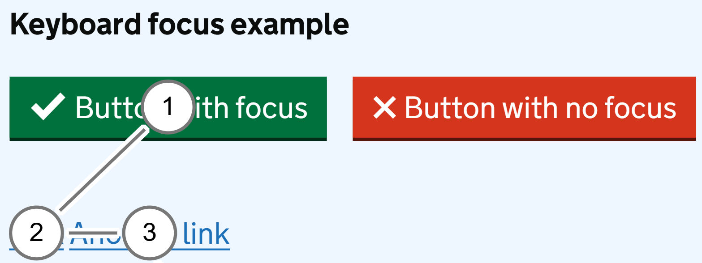

2.1.1 Keyboard (A)
What WCAG says:
“All functionality of the content is operable through a keyboard interface…” (with additional notes)
What this means
It must be possible for someone using only a keyboard to use a website or service.
Why it matters
This ensures that people with mobility or dexterity impairments who do not use a mouse or touchscreen can successfully complete their goals. It also helps people who use assistive technology such as screen readers or speech recognition.
How to check
Use the Tab key to navigate through a page and interact with menus, buttons and links. Check that any action that is possible using a mouse or touchscreen is also possible using a keyboard.
Common controls include:
- tab to move to the next interactive element
- shift and tab to move to the previous interactive element
- enter to activate links and menus, or submit a form
- space to use a form control like a checkbox or button
- arrow keys to use some controls, such as radio buttons or tabs
- escape to dismiss some content, such as dialogs
How to set up keyboard navigation on a Mac (A11y Collective)
How to test in detail for 2.1.1 Keyboard
Good example
Accessible search
The search on GOV.UK is fully usable without a mouse, including the filter and sort options.

Common mistakes
Functionality cannot be reached by keyboard
The second (red) button in this example does not receive focus and cannot be reached using a keyboard. The following screenshot illustrates the order each component receives focus.

In this case, it has been created using custom code rather than standard HTML (Hypertext Markup Language) components. While this can be made accessible, using standard elements such as <button> is more likely to make it accessible by default.
Functionality cannot be activated by keyboard
A button (like the first one in the previous example) may receive keyboard focus, but not work when a user attempts to activate it using a keyboard.
This commonly happens when a button is created using custom code, as it is simpler for developers to make custom buttons respond to clicks rather than keyboard interactions.
While custom buttons can be made to be accessible, it takes extra effort to ensure that they work predictably with a keyboard as well as a mouse. As with the previous example, a standard HTML button is much more likely to be keyboard accessible by default.
Related success criteria
- 2.1.2 No Keyboard Trap (A) requires that the keyboard never gets stuck in one part of a page.
- 2.4.1 Bypass Blocks (A) requires that there’s a way to skip past repeated content.
- 2.4.3 Focus Order (A) requires that keyboard focus is in a logical order.
- 2.4.7 Focus Visible (AA) requires that you can see where keyboard focus currently is.
- 2.4.11 Focus Not Obscured (Minimum) (AA) requires that focused components are not hidden by other components.
- 3.2.1 On Focus (A) and 3.2.2 On Input require that no disorienting changes happen when focusing on, or updating a user interface component.